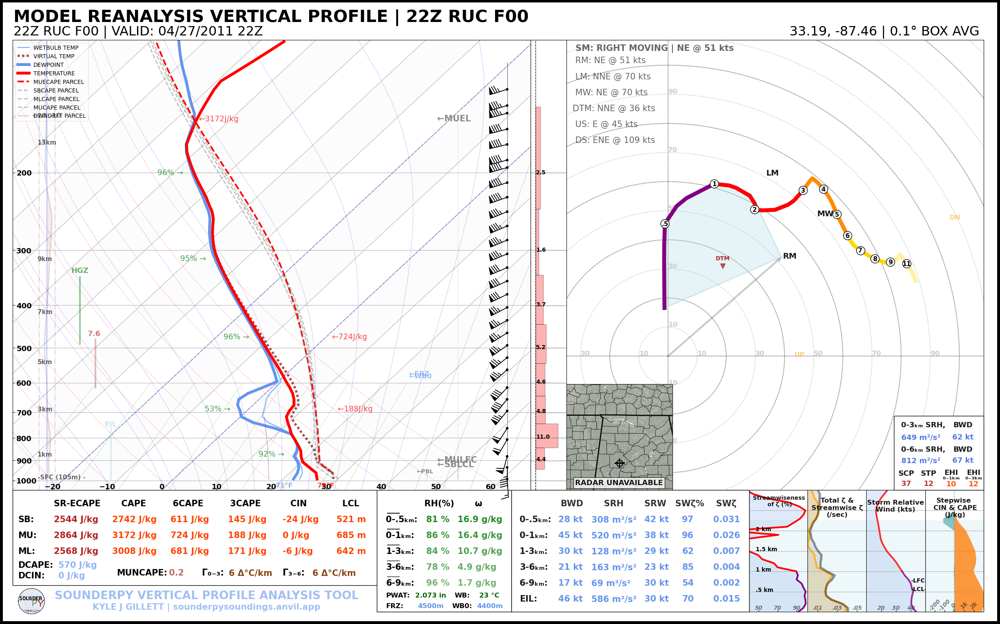
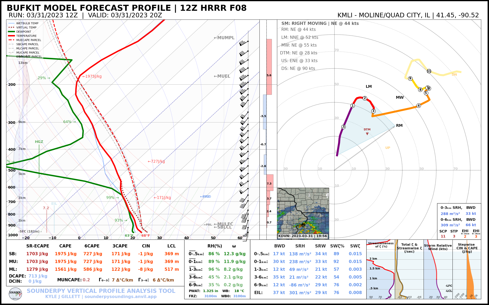

üìñ About
SounderPy: An atmospheric sounding visualization and analysis tool for Python
{kind=link}
ABSTRACT: SounderPy is a simple, open-source Python package for retrieving and plotting vertical profile (sounding) data. Built for simplicity and reliability for all uses and users, this project’s goal is to provide a uniform method for sounding analysis across multiple data types. Severe weather analysis and forecasting requires a sound comprehension of thermodynamic and kinematic properties of the environment. SounderPy makes this possible with robust access to data and custom visualizations. The tool creates complex yet effective sounding and hodograph plots with high readability which are designed specifically for severe weather analysis and forecasting. SounderPy is capable of retrieving and plotting model forecast data, observed radiosonde data, Aircraft Communications Addressing and Reporting System (ACARS) observation data, and model reanalysis data. All of this functionality can be completed in three simple lines of code or less, making SounderPy an accessible tool for both Python experts and novices. A number of scientific Python libraries build the base of SounderPy’s efficient and durable functionality, such as NumPy, Matplotlib, xarray, Metpy, and SHARPpy. SounderPy is available through GitHub and PyPi and is distributed under an MIT license.
Read more about SounderPy in this article published in the Journal of Open Source Software: SounderPy: An atmospheric sounding visualization and analysis tool for Python.

SounderPy has been used by several institutions. For example, this tool has been implemented by the Des Moines, Columbia, Grand Forks, Little Rock, Omaha, & Grand Rapids National Weather Service Offices; the State University of New York at Albany, Mississippi State University, the University of North Dakota, and others. Many students at various universities have used SounderPy in projects, posters, and papers, such as students at The University of Oklahoma, Ohio State University, Central Michigan University, Iowa State University, Texas A&M University, & Rizal Technological University.
☕ SounderPy is an open-source package developed on my own time. If you would you like to support continued SounderPy development, consider “Buying me a coffee”! ☕
Installation
SounderPy is available on PyPi and can be installed via pip:
pip install sounderpy
or via conda forge by first setting up the conda-forge channel:
conda config --add channels conda-forge conda config --set channel_priority strictthen you can install sounderpy via:
conda install sounderpyor
mamba install sounderpy
In your Python document, its fun to import SounderPy as spy!:
import sounderpy as spy
Sample Basic Use
SounderPy is designed for simple and efficient use for all users. Below is a basic example plotting an 03/31/2023 12z HRRR forecast profile at forecast hour 8 for BUFKIT site ‘KMLI’:
import sounderpy as spy
clean_data = spy.get_bufkit_data('hrrr', 'kmli', 8, '2023', '03', '31', '12')
spy.build_sounding(clean_data)
Those three basic lines will make this!:
More examples of these plots are available here
Citing SounderPy
References
Harris, C.R., Millman, K.J., van der Walt, S.J. et al. Array programming with NumPy. Nature 585, 357–362 (2020). DOI: 10.1038/s41586-020-2649-2.
Hoyer, S. & Hamman, J., (2017). xarray: N-D labeled Arrays and Datasets in Python. Journal of Open Research Software. 5(1), p.10. DOI: https://doi.org/10.5334/jors.148
Hunter, “Matplotlib: A 2D Graphics Environment”, Computing in Science & Engineering, vol. 9, no. 3, pp. 90-95, 2007.
Ryan M. May, Sean C. Arms, Patrick Marsh, Eric Bruning, John R. Leeman, Kevin Goebbert, Jonathan E. Thielen, Zachary S Bruick, and M. Drew. Camron. Metpy: a Python package for meteorological data. 2023. URL: Unidata/MetPy, doi:10.5065/D6WW7G29.
Ryan M. May, Sean C. Arms, John R. Leeman, and Chastang, J. Siphon: A collection of Python Utilities for Accessing Remote Atmospheric and Oceanic Datasets. Unidata. 2017. [Available online at https://github.com/Unidata/siphon.] doi:10.5065/D6CN72NW.
Pauli Virtanen, Ralf Gommers, Travis E. Oliphant, Matt Haberland, Tyler Reddy, David Cournapeau, Evgeni Burovski, Pearu Peterson, Warren Weckesser, Jonathan Bright, Stéfan J. van der Walt, Matthew Brett, Joshua Wilson, K. Jarrod Millman, Nikolay Mayorov, Andrew R. J. Nelson, Eric Jones, Robert Kern, Eric Larson, CJ Carey, İlhan Polat, Yu Feng, Eric W. Moore, Jake VanderPlas, Denis Laxalde, Josef Perktold, Robert Cimrman, Ian Henriksen, E.A. Quintero, Charles R Harris, Anne M. Archibald, Antônio H. Ribeiro, Fabian Pedregosa, Paul van Mulbregt, and SciPy 1.0 Contributors. (2020) SciPy 1.0: Fundamental Algorithms for Scientific Computing in Python. Nature Methods, 17(3), 261-272.
Marsh, P., Halbert, K., Blumberg, G., Supinie, T., Esmaili, R., Szkodzinski, J., “SHARPpy: Sounding/Hodograph Analysis and Research Program in Python.” GitHub. Available at: https://github.com/sharppy/SHARPpy.
Useful Links
Check out the operational SounderPy Sounding Analysis Site!
Check out SounderPy on GitHub
Check out SounderPy on PyPi
Check out the author’s website
Get updates on SounderPy development on Twitter
Get updates on SounderPy development on BlueSky
Support SounderPy by “Buying me a coffee”
Thanks for using SounderPy!
Publications Using SounderPy
Barton, B., and C. Gormley, 2025: Analysis of strongly tornadic environments in Central and Eastern Europe utilizing ERA5 reanalysis data. M.S. thesis, University of Oklahoma
Capuli, G., M. A. Noveno, and M. P. Ibañez, 2025: A case study of the tornadic supercell in the Province of Pampanga, Philippines (27 May 2024). arXiv, https://doi.org/10.48550/arXiv.2504.20559
Capuli, G. H., 2024: Friday the 13th hailstorm in the province of Bulacan, Philippines (13 August 2021): A case study. arXiv, https://arxiv.org/abs/2412.09307
Capuli, G., 2024: Project Severe Weather Archive of the Philippines (SWAP) Part 1: Establishing a baseline climatology for severe weather across the Philippine Archipelago. Ann. Geophys., 67(5), GC553, https://doi.org/10.4401/ag-9151
Coffer, B. E., M. D. Parker, M. C. Coniglio, and C. R. Homeyer, 2025: Supercell environments using GridRad-Severe and the HRRR: Addressing discrepancies between prior tornado datasets. Wea. Forecasting, 40, 1405–1428, https://doi.org/10.1175/WAF-D-24-0251.1
Hua, Z., A. Anderson-Frey, M. C. Brown, and Q. Jiang, 2025: A data-driven explainable framework for diagnosing cluster assignments of right-moving tornadic supercell soundings. Preprint, 4 Jul 2025.
Ibañez, M. P. A., J. A. Manalo, G. H. Capuli, and Coauthors, 2025: Spatiotemporal analysis of hail events in the Philippines. Asia-Pac. J. Atmos. Sci., 61, 24, https://doi.org/10.1007/s13143-025-00409-4
Kramer, Alex D., “The Influence of Complex Terrain on the Turin, New York Tornado of 2023” (2025). Atmospheric and Environmental Sciences Honors Program. 1. https://scholarsarchive.library.albany.edu/cas-daes-honors/1
Logan, T., X. Dong, B. Xi, X. Zheng, L. Wu, A. Abramowitz, and Coauthors, 2024: Assessing radiative impacts of African smoke aerosols over the southeastern Atlantic Ocean. Earth Space Sci., 11, e2023EA003138, https://doi.org/10.1029/2023EA003138
Logan, T., J. Hale, S. Butler, B. Lawrence, and S. Gardner, 2024: Occurrence of rare lightning events during Hurricane Nicholas (2021). Earth Space Sci., 11, e2024EA003733, https://doi.org/10.1029/2024EA003733
Logan, T., B. Smith, K. Calindi, C. White, and I. Jones, 2025: Comparison study of the electrical nature of two smoke-enhanced sea breeze thunderstorm cases during TRACER. J. Geophys. Res. Lett., submitted.
O’Neill, E., 2025: The sensitivity of the impact of cell mergers on supercell thunderstorms before versus after sunset. M.S. thesis, Department of Earth Science, The University of North Carolina at Charlotte, Charlotte
Staněk, M., 2024: Podmínky při vývoji weak-forcing derech ve střední Evropě. M.S. thesis, Department of Physical Geography and Geoecology, Faculty of Science, Charles University, Prague, Czech Republic.
Yattoni, A., 2024: The horizontal displacement of Macomb’s X-band and Davenport and Lincoln’s S-band radar images caused by atmospheric conditions. Master’s Thesis, Department of Earth, Atmospheric, and Geographic Information Sciences, Western Illinois University, available from ProQuest Dissertations & Theses Global, https://ezproxy.library.und.edu/login?url=https://www.proquest.com/dissertations-theses/horizontal-displacement-macomb-s-x-band-davenport/docview/3143462326/se-2